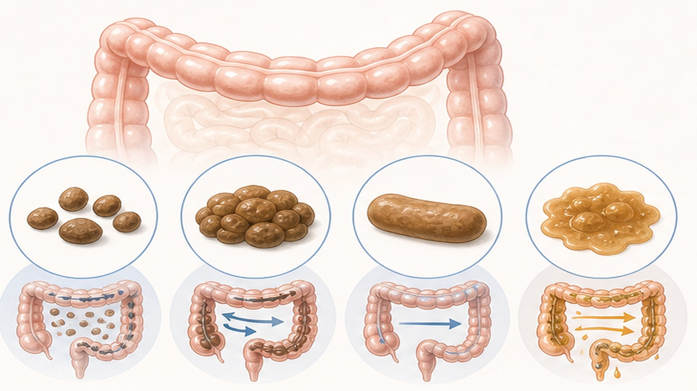
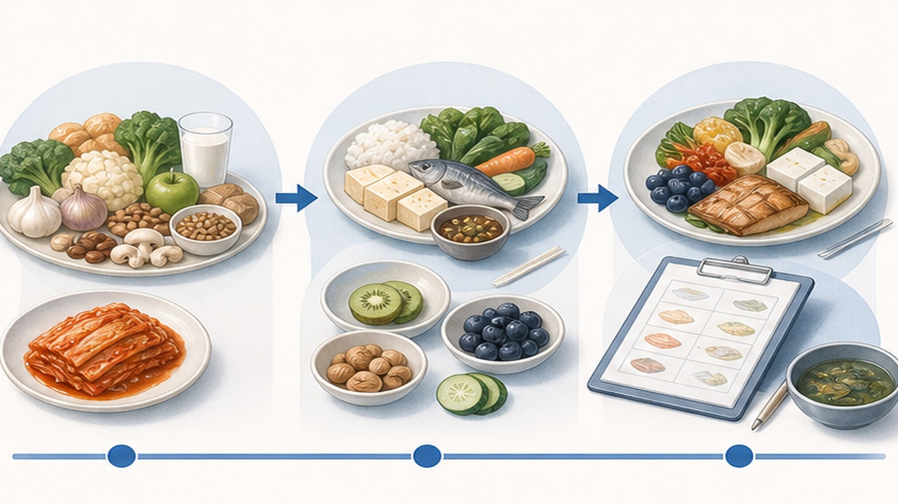
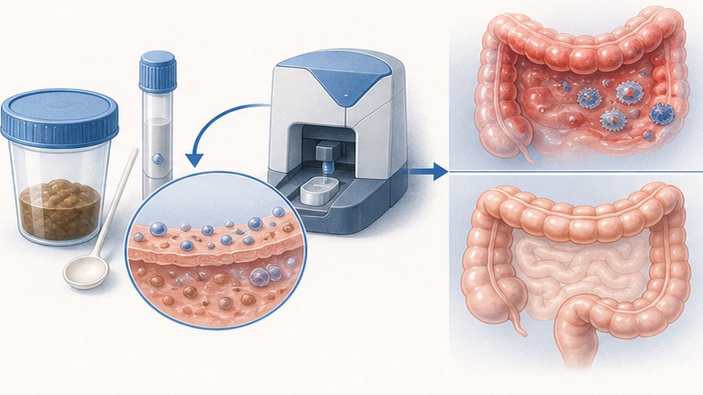
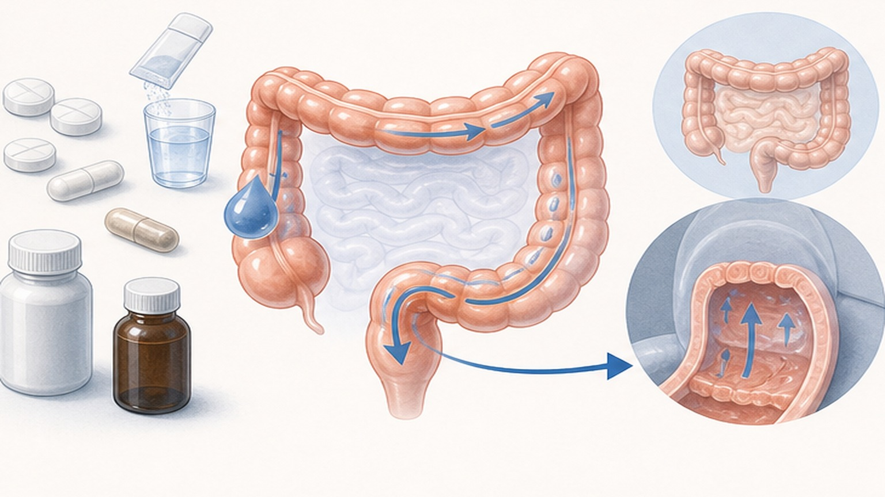

흔하고, 암이 되지 않으며, 단계적으로 관리하면 좋아집니다
로마 기준(Rome IV) — 증상의 기간·빈도·배변과의 관계를 봅니다
유형에 따라 쓰는 약이 달라집니다 — 2주 동안 변 모양을 적어 오세요

병의 원인이 아니라 이미 예민한 장을 자극하는 계기입니다
흔한 예시입니다 — 같은 음식도 먹는 양에 따라 달라, 짧게 시험 삼아 바꿔 봅니다
| 종류 | 줄여 볼 음식 | 대신 먹을 음식 |
|---|---|---|
| 곡류 | 밀가루 빵·면 등 밀이 많은 음식 | 흰쌀밥, 쌀국수, 감자 |
| 채소 | 마늘·양파(fructans) | 대파 푸른 부분, 가지, 시금치 |
| 유제품 | 우유(유당) | 유당을 뺀 우유 |
| 과일 | 사과·배·복숭아·수박 | 포도·키위·오렌지 |
| 콩 | 강낭콩 등 콩류 | 단단한 두부, 퀴노아 |

평생 참는 식단이 아니라 ‘나에게 맞지 않는 음식’을 찾는 과정입니다
약 이름보다 ‘어떤 증상을 겨냥하는가’가 중요합니다
염증성 장질환과 구별할 때 씁니다 (단위 μg/g)
| 결과 | 뜻과 다음 단계 |
|---|---|
| 50 이하 | 염증성 장질환일 가능성이 낮습니다. 경고 증상이 없으면 과민성 장 증후군 쪽으로 판단하는 데 도움이 됩니다. |
| 51~120 | 경계입니다. 소염진통제나 잠깐의 장염 때문일 수 있어 4~6주 뒤 다시 잽니다. |
| 121~250 | 염증 가능성이 올라갑니다. 증상과 함께 보고 담당 의사가 대장내시경 등 추가 검사를 정합니다. |
| 250 초과 | 장 염증 가능성이 높습니다. 감염·복용 약·증상을 함께 확인하고, 담당 의사가 재검·전문의 진료·내시경 필요성을 정합니다. |

하나라도 있으면 과민성 장 증후군으로 보기 전에 대장암·염증성 장질환을 확인합니다
생활습관 → 식단 → 약, 차례대로 함께 관리합니다

QR을 스캔하면 같은 자료를 휴대폰에서 다시 열 수 있습니다